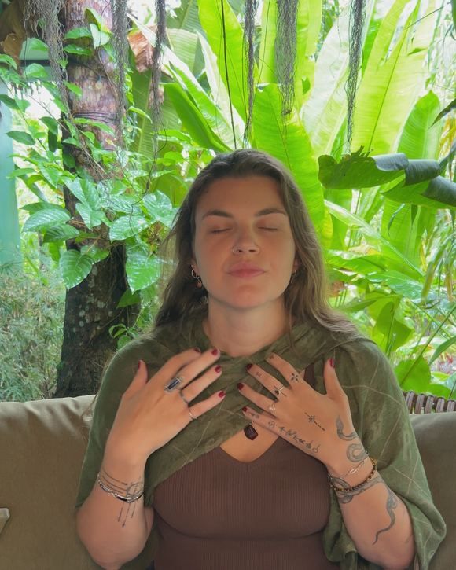

Somatic yin yoga
Long-held postures in which you meet yourself. Quiet, slow, deep.


Somatic process facilitation · Breathwork
 Spirit of Body and Breath
Lilly Stradner
Spirit of Body and Breath
Lilly Stradner
Ten years. What changed is not my body — it is that I no longer hide.
I accompany people for whom something is stuck — in life, in the body or around food.
01 — About me
I grew up in a family that looked perfectly fine from the outside. Inside, I started eating early. A lot. I was a heavy child and a very heavy teenager — and I grew up in a world that has little kindness to spare for that.
I hated myself. I believed I simply was not disciplined enough. For almost twenty-five years.
Then my parents separated. And then my father died, suddenly. He was the only secure attachment I had — the one person around whom I did not have to be anything.
What came after was not grief the way you picture it. It was too much to feel. And somewhere underneath, something in me began to call. It took me a long time to listen.
I followed that call. First into work on emotional eating, where a lot shifted quickly. Then deeper.
Along the way I remembered something my system had locked away for twenty years: I was abused by my uncle when I was five. A dissociative amnesia had taken the memory from me — not the pain. Being seen had become life-threatening for me. Eating was my body's answer to that.
In between lay years I can speak about without shame today: alcohol, without which I could not be around people at all. Depressive phases. Times when I no longer wanted to live. A relationship that hurt for five years and that I still could not leave.
At twenty I lost more than fifty kilos. By starving. It healed nothing. Afterwards I was just as little at home in myself as before — only thinner, with two operations and a panicked fear of gaining it all back.
“None of it was undisciplined or stupid. It had a reason.”
Part of it was not even mine. My grandmother went hungry during the war. What I took for my own lack of restraint was in part her survival, handed down through two generations. I reached that through breathing, not through thinking.
“My body was never the problem. And neither was I.”Lilly
That sentence is what everything I do today turns around. Our body is not stupid and not undisciplined. It always has a reason. When we learn to listen to it again, it leads us back.
And to be clear: you do not need to have been through something terrible to belong here. It is enough that something is not right and that you have had enough of it.
02 — My work
First we understand on a mental level what happens inside you: why you explode in certain situations, why something has not moved for years, which sentences you believe about yourself. And then we leave the head — because understanding alone has never changed anyone.
And we keep in view which systems all of this happens in. You can recognise once that you are not too little — and the next day the world tells you the opposite.
First you learn to feel again. Emotions, bodily sensations, hunger and fullness — all the things many of us switched off at some point because they were too much.
Alongside that comes the work with your nervous system: understanding what it even is, noticing which state you are in, and learning to regulate step by step in daily life. This is the foundation. Without it, everything else falls flat.
Here we go to the origins: somatic parts work, somatic shadow work, attachment themes, Conscious Connected Breathwork. We look at your triggers, understand how they connect, and bring up what has been down there a long time.
This is the part that sometimes feels uncomfortable. And the part that actually moves something.
We live in patriarchy, capitalism and neocolonialism. We can look at ourselves and heal as thoroughly as we like — these systems keep acting on us.
You can recognise once that you feel not good enough although it is not true. And the next day the world tells you the opposite again. That is why I include this from the start: we learn to see where these conditionings take hold in daily life — so that you do not lose yourself in them, but can step out.
I studied International Relations. What I took from it above all is this: how deeply we are shaped, and how much energy it costs to ignore that.

Somatic means: through the body. Not through conversation alone. We work with what is noticeable in you right now — tightness, pressure, numbness, warmth — and follow it instead of thinking it away. Your body stored the experiences. So it is also the place where they can release.
A breathing technique with no pause between the in-breath and the out-breath. It brings you into an altered state of consciousness in which things are allowed to surface that you cannot reach in everyday life. Through it I found connections in myself I could not have explained before.
I am not the one standing at the front telling you how to be. I share my experience, I share my knowledge, and I hold space. I learn as much from the people I accompany as they learn from me.
What matters most to me: that you are witnessed. In your pain, in your patterns, in all of it. Because exactly there something happens that cannot happen alone.
03 — One-to-one
We work online in sessions, and between the sessions I am there for you on WhatsApp — because life does not happen in the appointments, it happens in between.
There are two ways in. One is open to whatever is stuck right now: a loss, a blow of fate, pressure to perform, procrastination, perfectionism, anger that overwhelms you, loneliness, fear of other people. The other is for body and food themes — I know my way around there, because I went through it myself.
How long we work together and what exactly it looks like is not decided in advance from a menu, but together in conversation.
When you function and are tired anyway. When you shout at people you love and hate yourself for it afterwards. When a loss knocked you over and everyone assumes you are long past it. When you know exactly what you should do and still do not do it. None of that needs a name or a diagnosis.
If your eating disorder is in the past and something stayed anyway — the counting, the shame, the glance into every shop window — then you are in the right place. It does not have to be acute. It is enough that it wears you out.
Free introductory call, 30 minutes
We take our time to see whether it fits — and I will tell you openly there what it costs.

04 — Group journeys

My first group mentoring ran on somatic work. The next one will have considerably more breathwork — I am working out exactly how it should look.
If you would like to be there, put your name on the waiting list. You will hear from me as soon as it starts, ahead of everyone else.
05 — Community
For years I tried to sort everything out with myself. To heal alone, to heal online, to be a burden to no one. It does not work. Connection is not an extra — it is part of the work.
That is why I am building a community. Once a month I hold a breathwork session, once a month a somatic session. We agree the dates together. Alongside that there is a place for questions and for being in exchange with each other.
To begin with this runs on WhatsApp — uncomplicated, with nothing to sign up for.

06 — In person

Working in person is the loveliest thing — sitting in the same room, breathing together, really meeting each other.
Honestly, it is just not always possible. In winter I am usually further away; in summer I am in Germany, often in Bielefeld, but travelling a lot.
If we happen to be in the same place: just ask me. Single sessions work then, breathwork above all, but somatic work too. And if you bring a group together, I will gladly come to you.
07 — Recordings
Three recordings you can take in your own time — no appointment, no commitment. A good way to sense whether my way of working suits you.
Long-held postures in which you meet yourself. Quiet, slow, deep.
A guided Conscious Connected Breathwork session to breathe along with from home.
An accompanied session in which you practise listening to your body again.
Tell me which one interests you
The group mentoring will join them here later as a course.
Where I come from
I hold certificates for all of these trainings. But something else matters more to me: I will not send you anywhere I have not been myself.

My work replaces neither psychotherapy nor medical treatment. If you are in a very bad place right now, please turn to people who are there for you around the clock. These are German services — if you are elsewhere, please look up the helpline for your country:
08 — Contact
Whether it is an introductory call, the waiting list, the community or one of the recordings — just tell me what it is about. I read every message myself and will get back to you within two working days.